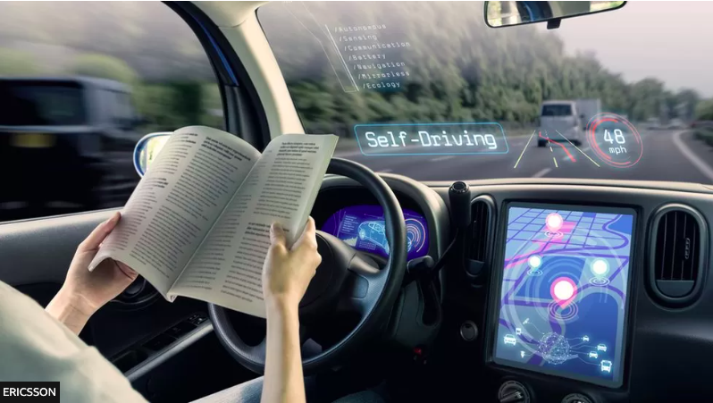

Choices
Figure 3
Note. Self-driving car. From Will self-driving cars really need 5G to make them work?, by Ericsson, n.d. (https://www.bbc.com/news/business-45048264).
Choices relate to autonomous vehicles in two ways. One is the choices relating to the operation of the car itself. This links in with the risks regarding autonomous vehicles, as to ensure the safe operation of autonomous vehicles we need to make good choices regarding regulation and testing. In that regard, regulatory agencies and developers alike would want to gain an understanding of how the car makes its decisions. AI systems can be incredibly complex, so a sound understanding of how it makes its choices would be an important factor when integrating autonomous vehicles into our society.
The other way that choices relate to autonomous vehicles is the more evident one, where autonomous vehicles provide us with more choices we can make regarding transport. This is similar to the opportunities provided to us by the technology. For example, autonomous vehicles could provide more choice to elderly people in the ways that they get around. Many elderly may have little or even no choice as to how they get to places, having to rely on family, or taxis if they can afford it. Although public transport is a cheap option, many elderly may have trouble using it as it often involves walking to and from the stops. They may also have difficulty getting on or off buses or trains. This provides a second-order effect whereby family members who may have had to dedicate time to transporting them around, instead have the choice as to whether they wish to help or not. The same concept discussed can also easily extend to disabled people or children too. Having a safe and reliable mode of transport available without needing a driver therefore provides choice to a large section of society.
Artificial intelligence programs in cars could also prevent drivers from making bad choices on the road. As mentioned earlier, Tesla reports that their cars “prevent 40 crashes per day for just one scenario” (Koetsier, 2022). In this case, it was due to drivers accidentally accelerating when they should have braked, however, in theory developers could attempt to solve any problem on the road, provided they can think of it and find a way to program for it. At the very least, this could prevent any number of common accidents, such as merging into another vehicle, pulling out in front of someone, or failing to stop at signs or lights. Another way autonomous vehicles could prevent drivers from making bad decisions is by preventing them from having to make a decision in the first place. Instead of deciding to drive when tired or inebriated, the user can just get in the car and it will take them wherever they want to go. “In 2020, there were: 139 fatal crashes, 194 serious injury crashes, [and] 1239 minor injury crashes where driver alcohol/drugs were a contributing factor…” (Safety - Annual stats, 2020). It could be argued that if these drivers had access to a self-driving car, they would not have made the poor decision to get onto the road while under the influence.